Parameters, return values, and dynamic scoping
Gregory S. DeLozier, PhD
function, a parameter
list, and a body.null.double = function(x) { return x + x };
print(double(21));Prints 42.
function triple(x) { return x + x + x };
print(triple(7));Prints 21. Exactly
triple = function(x) { return x + x + x };
function add3(a, b, c) { return a + b + c };
add3(1, 2);
add3(1, 2, 3, 4);Both fail. Only add3(1, 2, 3) matches the three
declared parameters.
return Stops the Bodyfunction classify(n) {
if (n < 0) { return "negative" };
if (n == 0) { return "zero" };
return "positive";
};
print(classify(-5));
print(classify(0));
print(classify(5));Prints negative, zero, then
positive.
function announce() { print("starting") };
print(announce());Prints starting, then
null.
null Is a Real Valueprint(null);
print(null == null);
print(type(null));Prints null, then true, then
null.
function f(x) {
y = x * 2;
return y + 1;
};
print(f(5));Prints 11.
function f(x) {
doubled = x * 2;
return doubled;
};
a = f(3);
b = f(100);
print(a);
print(b);Prints 6, then 200.
function showGreeting() { print(greeting) };
function englishCaller() { greeting = "Hello"; showGreeting() };
function frenchCaller() { greeting = "Bonjour"; showGreeting() };
englishCaller();
frenchCaller();Prints Hello, then
Bonjour.
$PARENT
Chain
showGreeting’s frame chains back through whoever
called it.
function makeAdder(a) {
return function(b) { return a + b };
};
y = makeAdder(1)(2);Raises Unknown identifier: a.
function factorial(n) {
if (n == 0) { return 1 };
return n * factorial(n - 1);
};
print(factorial(6));Prints 720.
function square(x) { return x * x };
print(1 + square(3) + 1);
function isPositive(x) { return x > 0 };
if (isPositive(5)) { print("5 is positive") }Prints 11, then
5 is positive.
function pair() { return [10, 20] };
print(pair()[1]);
function record() { return {"value": 99} };
print(record().value);
function makeAdder() { return function(a, b) { return a + b } };
print(makeAdder()(3, 4));Prints 20, then 99, then
7.
| Operation | Function behavior |
|---|---|
type(function(x) { return x }) |
Returns "function" |
string(f), print(f) |
Displays as <function> |
f == g |
true only when f and g are
the same function value |
| Arithmetic, ordering comparisons | Type error |
length, head, tail,
slice, indexing |
Type error |
function_expression ::= "function"
"(" [ identifier { "," identifier } ] ")" block
function_definition ::= "function" identifier
"(" [ identifier { "," identifier } ] ")" block
return_statement ::= "return" [ expression ]
call_suffix ::= "(" [ expression { "," expression } ] ")"call_suffix extends the same suffix chain
[ and . already use.
expression ::= logic_or [ "=" expression ]x = y = 1;Right-associative: y is assigned first, and that
assignment’s own value becomes what x
receives.

function_definition resolves at parse time into
this same tree.
| Body’s status | Call reports |
|---|---|
"return" |
The returned value, with no status: the call finished normally |
None (fell off the end) |
null, with no status |
"exit" |
Passed outward unchanged, the same as it passes outward through a loop |
"break" or "continue" |
A specific error: neither one has a loop left to belong to |
function f() { break };
f();Raises 'break' used outside a loop.
A function’s own value retains only its parameters and body – nothing about where it was defined.
Dynamic scoping resolves a free name by looking at the caller, not at wherever the function was written.
break and continue are rejected at
both boundaries; a bare return is rejected only at the
program boundary, where there is no call left to consume
it.
| Operation | Result |
|---|---|
type(function(x) { return x }) |
"function" |
type(null) |
"null" |
| Calling with the wrong number of arguments | Runtime error |
Falling off the end, or a bare return |
null |
break or continue with no enclosing
loop |
Specific boundary error |